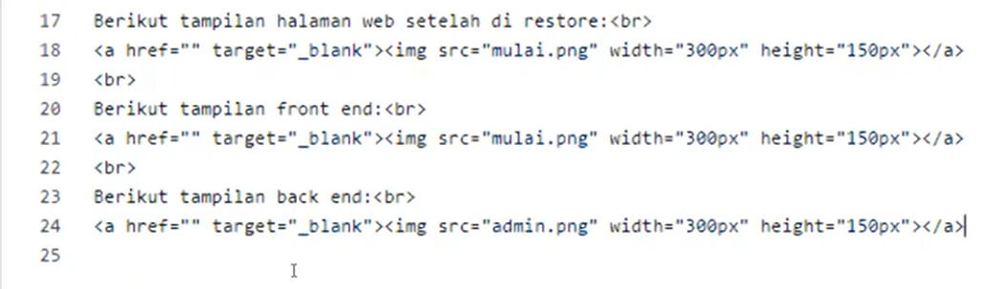

Pertemuan 2
Nama : Tessa Hervika
NIM : 1922500085
Rekayasa Web SI5A
Pada pertemuan 2 belajar cara membuat folder pada github, mengulang penjelasan pertemuan 1 (cara install, backup, dan restore Wordpress), menjelaskan dashboard (admin area) dan Site Preview (client area).
Cara Buat Folder Pada Github
- Buka website github
- Klik new repositori
- Buat nama repositori(si5a2122o)
- Isi deskripsi
- Pilih Public
- Pilih add a README file
- Klik Create Repositori
- Muncul lah File README
- Pada add file klik create new file
- Ketik angka 1 / (untuk nama folder)
- Lalu ketik index.html (nama file)
- Masukkan isi
- Klik Commite new file
- Jika ingin tambah foto dan ubah foto jadi link, contoh ketik script sepertipada gambar berikut 
- Klik add files, upload files, lalu drag foto dan klik commit
- Jika sudah, klik settings
- Klik Pages
- Source none diganti main
- Klik save
- Muncul link, lalu klik
- Buka link tersebut dengan menambahkan nama folder yang kita buat tadi (delaper.github.io/si5a21220/1/)
- Wordpress terdiri dari 2 sisi, yaitu site preview/client area (halaman depan/frontend, hasil dari admin area) dan admin area (backend/dasbor admin)
- Jika ingin menambahkan foto